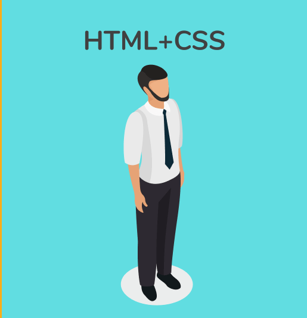

HTML
Hypertext Markup Language:- is the primary language used to create the structure of web pages. HTML is used to organize text, images, links, and other elements within a page using tags to identify each type of content.
Learn moreCSS
Cascading Style Sheets:- is a language used to format and design web pages, allowing you to control the appearance of content such as colors, fonts, spacing, and dimensions. CSS works alongside HTML to provide an attractive and beautiful user experience.
Learn more JavaScript
JavaScript is a programming language used to make web pages more interactive. It allows you to dynamically change page content, interact with the user, and control elements on the page, such as buttons and forms. It is used in conjunction with HTML and CSS to add advanced functionality such as form validation, updating content without reloading the page, and interacting with the user in a more dynamic way.
Learn more